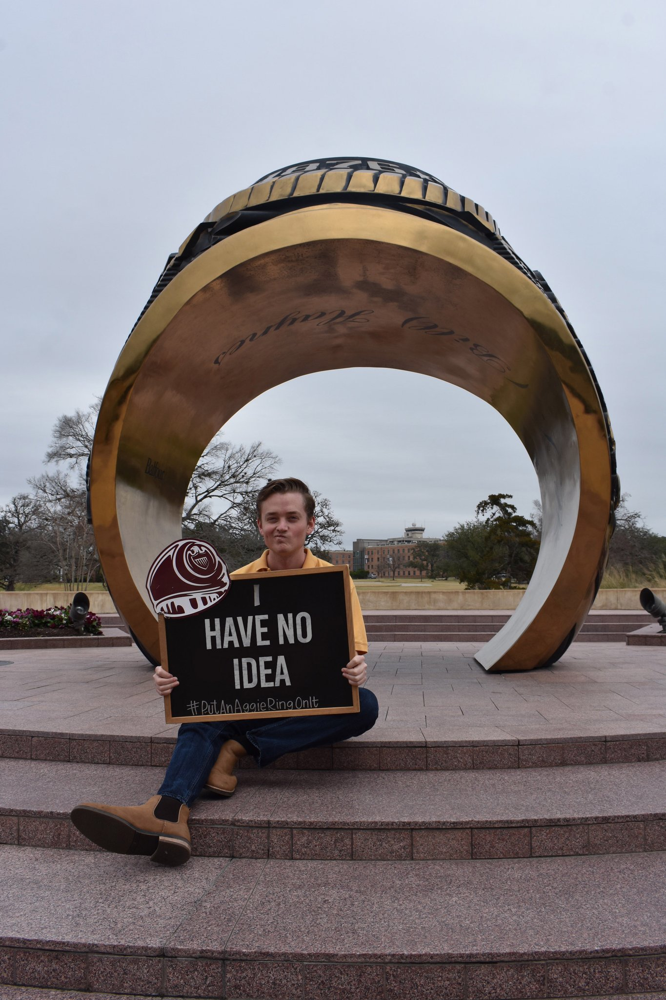

Drew Spooner
Hi! I'm Drew!
Computing ‘21 (Dec 2021) | Pronouns: he/him | Fun Fact: Lifelong Buffalo Bills fan
Background: I took CS classes in high school and found out that I really enjoyed coding. At that point in time I was not sure what I was going to pursue, so majoring in computer science felt natural.
Why I am taking this course: I enjoyed Dr. Moore’s HCI course, specifically aspects of accessibility. As someone who would like to work in front end development, I thought this class would be rather useful for gathering insights to be more inclusive.